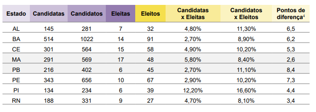

Mulheres negras na politica da Bahia

Eleições no norderte em 2022 - Instituto Odara
Desafios Persistentes: Mulheres Negras no Mercado de Trabalho Baiano
Alguns movimentos
Candidatas Negras em Guanambi